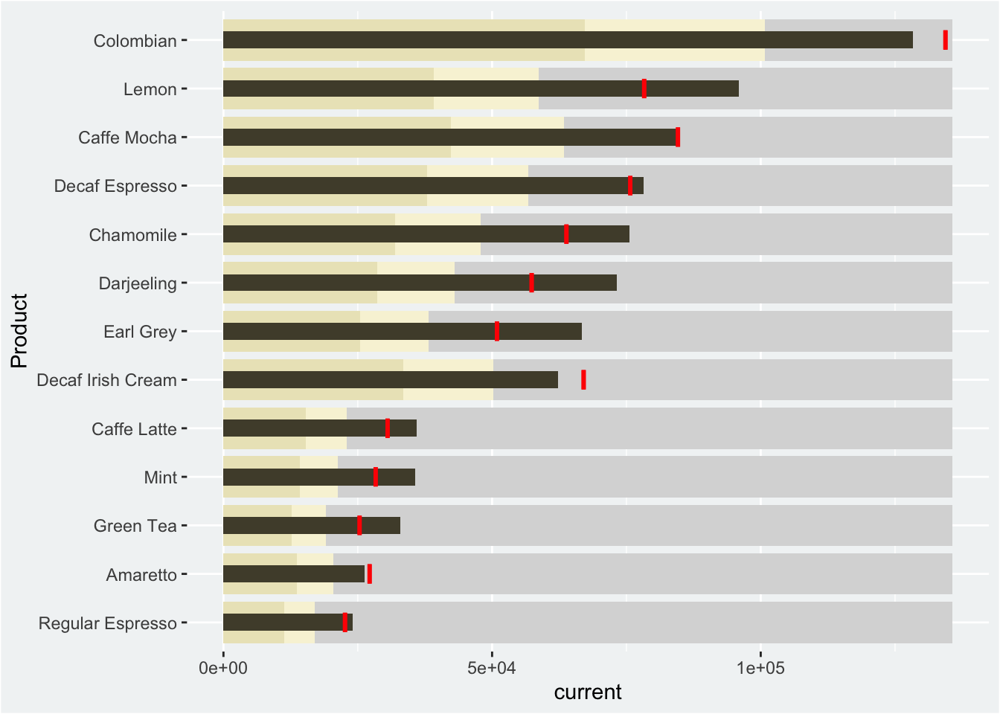
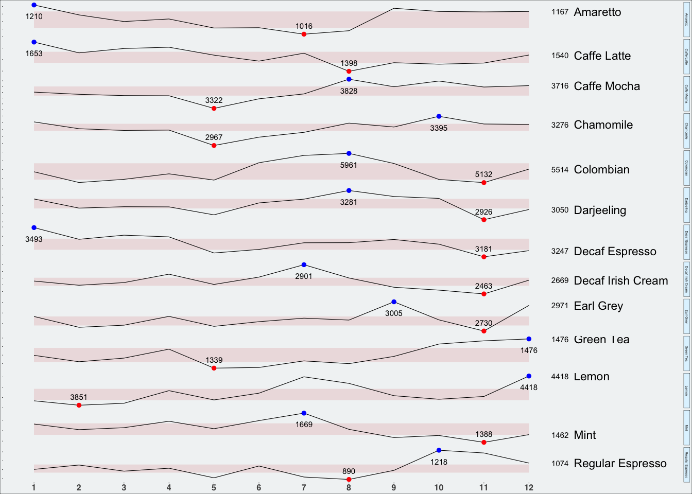

pacman::p_load(lubridate, ggthemes, reactable, reactablefmtr, gt, gtExtras, tidyverse)Hands-on_Ex_09
Information Dashboard Design: R methods
1 Objectives
Create bullet chart by using ggplot2
Create sparklines by using ggplot2
Build industry standard dashboard with R Shiny
2 Getting started
R packages that are used for this chapter:
tidyverse: provides a collection of functions for performing data science task such as importing, tidying, wrangling data and visualising data. It is not a single package but a collection of modern R packages including but not limited to readr, tidyr, dplyr, ggplot, tibble, stringr, forcats and purrr.
lubridate: provides functions to work with dates and times more efficiently.
ggthemes: is an extension of ggplot2. It provides additional themes beyond the basic themes of ggplot2.
gtExtras: provides some additional helper functions to assist in creating beautiful tables with gt, an R package specially designed for anyone to make wonderful-looking tables using the R programming language.
reactable: provides functions to create interactive data tables for R, based on the React Table library and made with reactR.
reactablefmtr: provides various features to streamline and enhance the styling of interactive reactable tables with easy-to-use and highly-customizable functions and themes.
3 The dataset
A personal database in Microsoft Access mdb format called Coffee Chain will be used.
3.1 Importing network data from files
In the code chunk below, odbcConnectAccess() of RODBC package is used used to import a database query table into R.
library(RODBC)
con <- odbcConnectAccess2007('data/Coffee Chain.mdb')
coffeechain <- sqlFetch(con, 'CoffeeChain Query')
write_rds(coffeechain, "data/CoffeeChain.rds")
odbcClose(con)Note
Before running the code chunk, R system needs to be changed to 32bit version. This is because the odbcConnectAccess() is based on 32bit and not 64bit. However, macOS the latest version no longer support 32-bit. We wil skip running this code, and directly use the dataset provided by the professor.
3.4 Data preparation
The code chunk below is used to import CoffeeChain.rds into R.
coffeechain <- read_rds("data/CoffeeChain.rds")The code chunk below is used to aggregate Sales and Budgeted Sales at the Product level.
product <- coffeechain %>%
group_by(`Product`) %>%
summarise(`target` = sum(`Budget Sales`),
`current` = sum(`Sales`)) %>%
ungroup()4 Bullet chart in ggplot2
The code chunk below is used to plot the bullet charts using ggplot2 functions.
Show code
product_ordered <- product
product_ordered$Product <- factor(product_ordered$Product,
levels = product_ordered$Product[order(product_ordered$current)])
ggplot(product_ordered, aes(Product, current)) +
geom_col(aes(Product, max(target) * 1.01),
fill="grey85", width=0.85) +
geom_col(aes(Product, target * 0.75),
fill="#F8F3D9", width=0.85) +
geom_col(aes(Product, target * 0.5),
fill="#EBE5C2", width=0.85) +
geom_col(aes(Product, current),
width=0.35,
fill = "#504B38") +
geom_errorbar(aes(y = target,
x = Product,
ymin = target,
ymax= target),
width = .4,
colour = "red",
size = 1) +
theme(plot.background = element_rect(fill = "#f1f4f5"),
panel.background = element_rect(fill = "#f1f4f5")) +
coord_flip()
5 Plotting sparklines using ggplot2
5.1 Prepare data
First, create a sales report with monthly sales data.
Show code
sales_report <- coffeechain %>%
filter(Date >= "2013-01-01") %>%
mutate(Month = month(Date)) %>%
group_by(Month, Product) %>%
summarise(Sales = sum(Sales)) %>%
ungroup() %>%
select(Month, Product, Sales)Then compute the minimum, maximum and end of the month sales.
Show code
mins <- group_by(sales_report, Product) %>%
slice(which.min(Sales))
maxs <- group_by(sales_report, Product) %>%
slice(which.max(Sales))
ends <- group_by(sales_report, Product) %>%
filter(Month == max(Month))We calculate the 25 and 75 quantiles and add back to data frame for plotting.
Show code
quarts <- sales_report %>%
group_by(Product) %>%
summarise(quart1 = quantile(Sales,
0.25),
quart2 = quantile(Sales,
0.75)) %>%
right_join(sales_report)5.2 sparklines in ggplot
Show code
ggplot(sales_report, aes(x=Month, y=Sales)) +
facet_grid(Product ~ ., scales = "free_y") +
geom_ribbon(data = quarts, aes(ymin = quart1, max = quart2),
fill = "#EDDFE0") +
geom_line(size=0.2) +
geom_point(data = mins, col = 'red', size = 1) +
geom_point(data = maxs, col = 'blue', size = 1) +
geom_text(data = mins, aes(label = Sales), vjust = -1, size = 2) +
geom_text(data = maxs, aes(label = Sales), vjust = 2.5, size = 2) +
geom_text(data = ends, aes(label = Sales), hjust = 0, nudge_x = 0.5, size = 2) +
geom_text(data = ends, aes(label = Product), hjust = 0, nudge_x = 1.0, size = 3) +
expand_limits(x = max(sales_report$Month) +
(0.25 * (max(sales_report$Month) - min(sales_report$Month)))) +
scale_x_continuous(breaks = seq(1, 12, 1)) +
scale_y_continuous(expand = c(0.1, 0)) +
theme_tufte(base_size = 3, base_family = "Helvetica") +
theme(axis.title=element_blank(), axis.text.y = element_blank(),
axis.text.x = element_text(size = 6, face = "bold"),
plot.background = element_rect(fill = "#f1f4f5"),
strip.background = element_rect(fill = "#E0F4FF")
) 
6 Static Information Dashboard Design: gt and gtExtras methods
We will create static information dashboard by using gt and gtExtras packages.
6.1 Plot a simple bullet chart
Use the code below to plot a bullet chart.
Show code
product %>%
gt::gt() %>%
gt_plt_bullet(column = current,
target = target,
width = 60,
palette = c("lightblue",
"black")) %>%
gt_theme_538()| Product | current |
|---|---|
| Amaretto | |
| Caffe Latte | |
| Caffe Mocha | |
| Chamomile | |
| Colombian | |
| Darjeeling | |
| Decaf Espresso | |
| Decaf Irish Cream | |
| Earl Grey | |
| Green Tea | |
| Lemon | |
| Mint | |
| Regular Espresso |
7 sparklines: gtExtras method
Before we can prepare the sales report by product by using gtExtras functions, code chunk below will be used to prepare the data.
report <- coffeechain %>%
mutate(Year = year(Date)) %>%
filter(Year == "2013") %>%
mutate (Month = month(Date,
label = TRUE,
abbr = TRUE)) %>%
group_by(Product, Month) %>%
summarise(Sales = sum(Sales)) %>%
ungroup()Note
One of the requirement of gtExtras functions is that almost exclusively they require you to pass data.frame with list columns. In view of this, code chunk below will be used to convert the report data.frame into list columns.
report %>%
group_by(Product) %>%
summarize('Monthly Sales' = list(Sales),
.groups = "drop")# A tibble: 13 × 2
Product `Monthly Sales`
<chr> <list>
1 Amaretto <dbl [12]>
2 Caffe Latte <dbl [12]>
3 Caffe Mocha <dbl [12]>
4 Chamomile <dbl [12]>
5 Colombian <dbl [12]>
6 Darjeeling <dbl [12]>
7 Decaf Espresso <dbl [12]>
8 Decaf Irish Cream <dbl [12]>
9 Earl Grey <dbl [12]>
10 Green Tea <dbl [12]>
11 Lemon <dbl [12]>
12 Mint <dbl [12]>
13 Regular Espresso <dbl [12]> 7.1 Plot Coffechain sales report
7.2 Add statistics
7.3 Combine the data.frame
7.4 Plot the updated data.table
7.5 Combine bullet chart and sparklines
9 Reference
Kam, T. S. (2023, December 4). R for Visual Analytics. https://r4va.netlify.app/